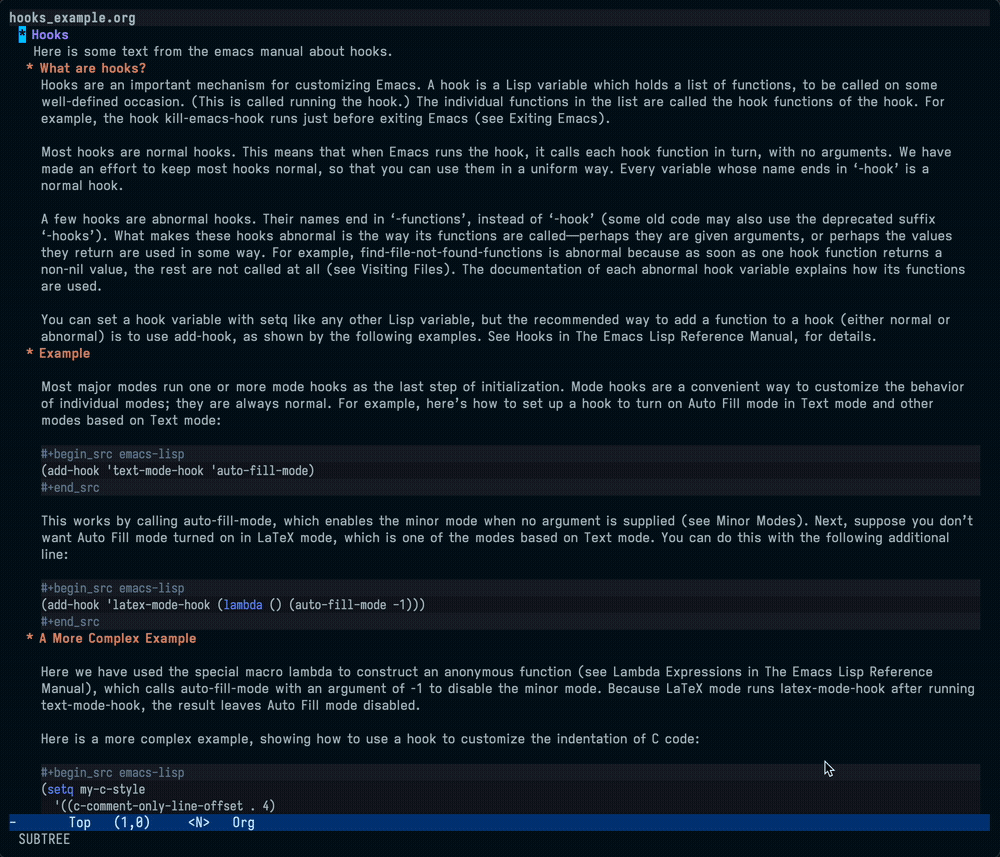
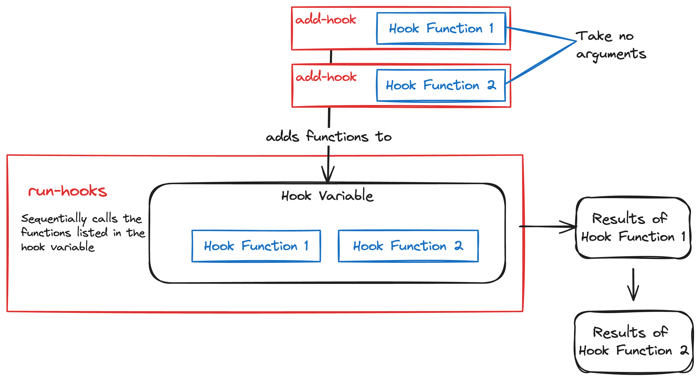

Introduction to Emacs Hooks
December 17, 2023
Emacs Hooks
Today I was customizing the appearance of org files displayed with org-tree-slide. In particular, I wanted to increase the font size and start Olivetti mode whenever I started org-tree-slide-mode and return everything to normal when I was done. This, I quickly discovered, required the use of hooks. Hooks are not especially complicated, but they are useful and worth taking a few minutes to understand. This post will cover the basics of working with hooks in emacs.
What do hooks do?
A hook is a list of functions that are run on specifically-defined occasions, triggered by calls to a run-hooks or run-mode-hooks function.
Hooks are very commonly run when major modes (and, often, minor modes) are initialized in an emacs session. They provide a way to set up mode-specific configurations when a mode is initialized or when some specific action is undertaken by the user.
For a specific example, org-tree-slide-mode defines the hooks org-tree-slide-play-hook and org-tree-slide-stop-hook, which define what happens when a slide show is started or stopped. I wanted to increase the font size, decrease the width of the displayed text, and remove the header line when the slide show was active, and reset them when it was finished.

org-tree-slide-mode runs org-tree-slide-play-hook, a list of functions meant to run when a slide show is started in org-tree-slide-mode. In this case, the hook makes the text larger and centered in the buffer.How do hooks work?
First, a quick glossary of terms:
- a hook is a variable defining a list of functions. These variables typically end in
-hook, such asorg-mode-hook. Hooks may also end in-functions; these so-called "abnormal hooks" are not the focus of this post. Still, if you're searching for hooks, it is good to know that this pattern exists. - a hook function is one of the functions that comprise the hook.
- There are normal and abnormal hooks. Most hooks are normal. For the purposes of this post, I am focusing on normal hooks. In a normal hook, none of the hook functions take any arguments, and emacs calls each hook function in the list sequentially. Abnormal hooks may take arguments or exhibit other behaviors when called that require special attention/documentation.
Hooks are run when specific functions call them. Such functions are often called at specific points in the initialization or use of emacs modes, but they are not limited to those circumstances. Here is a minimal example.
Hooks Example
First, we'll define the hook variable. This is the same as defining any other variable.
(setq my-example-hook nil)
Next, we'll add some hooks to this variable. These will just be simple functions that print some output.
(defun hook-function-1 () (message "Output of the first hook function")) (defun hook-function-2 () (message "Output of the second hook function")) (add-hook 'my-example-hook 'hook-function-1) (add-hook 'my-example-hook 'hook-function-2)
Now, if we inspect my-example-hook (with C-h v my-example-hook), we see:
my-example-hook’s value is (hook-function-2 hook-function-1)
Now we can run the hook with the run-hooks function.
(run-hooks 'my-example-hook)
Which prints the following to the messages buffer:
Output of the second hook function Output of the first hook function
There are three key components to pay attention to in this example:
- The hook variable
my-example-hook. We useadd-hookto populate this variable with hook functions. - The hook functions
hook-function-1andhook-function-2. These functions, intended for use in a normal hook, take no arguments. - The function that runs the hook; in this case
run-hooks. There are a few different functions for running hooks. Therun-mode-hooksfunction, for example, is specialized to the case of running mode hooks, or hooks that are associated with initializing a mode (e.g.prog-mode-hook).
There's nothing especially unique about any of these components. We assign the variable in (1) a name ending in -hook by convention, but it works the same with any name. The hook functions defined in (2) are normal functions; the one noteworthy point is that they take no arguments. The function in (3) is a built-in standard function in Emacs Lisp designed for running hook functions.

Mode Hooks
Hooks are most commonly encountered in the context of modes. Modes generally define hooks to which users can add functions that will be called at the end of the mode's initialization. For example, I wanted to display line numbers whenever I was in a buffer with code, so I have the following line in my config:
(add-hook 'prog-mode-hook 'display-line-numbers-mode)
Inspecting the hook shows:
prog-mode-hook is a variable defined in ‘prog-mode.el’.
Its value is (outline-minor-mode display-line-numbers-mode) Original value was nil
Normal hook run when entering programming modes.
This variable may be risky if used as a file-local variable. You can customize this variable. Probably introduced at or before Emacs version 24.1.
and, indeed, when I open an e.g. Python buffer, line numbers appear as desired.
Appendix: Hooks in use-package
I use use-package for managing my emacs packages. use-package declarations allow users to pass a :hooks option in the package declaration in order to add functions to hooks. Hooks can be configured in use-package by defining a cons cell as follows.
(use-package package-name :hook ('mode-name . 'function-to-add-to-hook) )
Note that we do not refer to mode-name-hook in the hook configuration. use-package adds the -hook automatically by default. The above will add function-to-add-to-hook to mode-name-hook.
Further Reading
- My Emacs config. This has not, admittedly, been structured for broad consumption, but with a little searching you can find how I've configured some hooks. In particular, here is my
org-tree-slideconfiguration, which I mentioned at the beginning. - Emacs Docs, which go into some more detail on abnormal hooks among other topics.